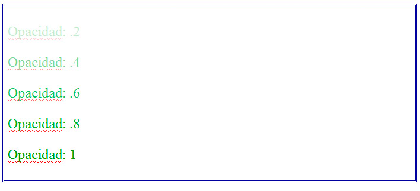

Todos los navegadores actuales pueden aplicar la propiedad opacity. Ésta va seguida de un valor entre cero y uno, que indica el nivel de transparencia que tendrá el elemento al que se le aplique (cero sería transparente y uno sería completamente opaco). Por ejemplo:
div.grupouno {opacity:.2}
div.grupodos {opacity:.6}
div.grupotres {opacity:.8}
La figura muestra el resultado de aplicar diferentes niveles de opacidad a un grupo de elementos.
